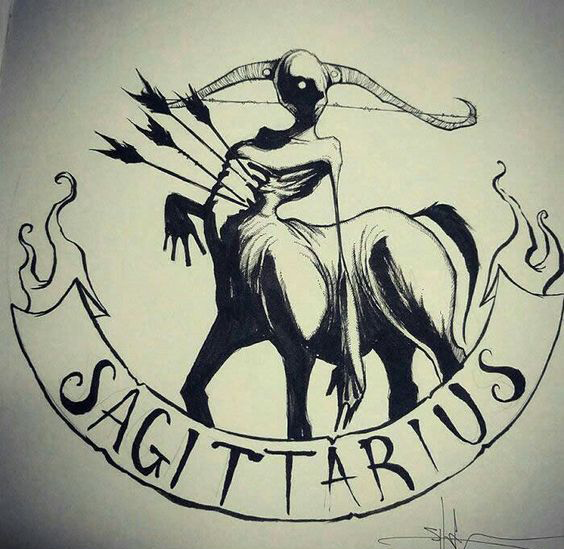
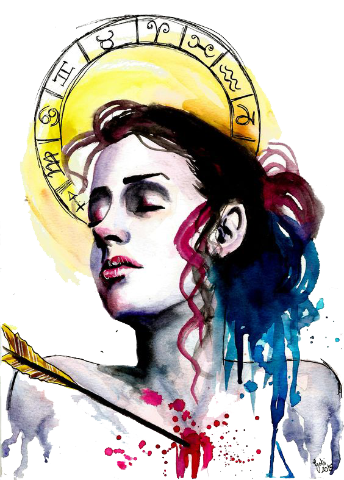

In love, Sagittarius is full of contradictions. Symbolized by the centaur, the mythical half-horse/half-human, you’re governed by both animal instincts and enlightened thinking. Sagittarius rules morals, wisdom, higher education…along with the hips and thighs. Although you’re always striving for divine inspiration, you’ve got a serious lust for life’s “earthly pleasures.”
 The centaur is the symbol for this sign. In mythology, the centaur was half man and half horse, given to pursing pleasure. The centaur is shown with a bow, which he shoots. Wherever the arrow lands, the centaur follows, retrieves the arrow and shoots again. Those born under this sign will love travelling, discovering new things, meeting new people, and learning new things. Sagittarians crave the freedom of the open road, both metaphorically and physically. They are most unhappy when they are tied to a normal routine and can become restless in situations where there is not enough variety involved.
Sagittarians are highly intelligent and love to be around intelligent people. They enjoy learning new things, traveling to new places, and experiencing unique adventures. Creativity is at the core of who they are and Sagittarians are often creating and recreating their living situations, work situations, and human relationships.